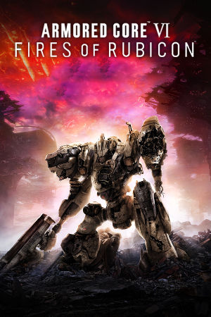

Windows, PlayStation 4, PlayStation 5, Xbox One, Xbox Series X/S
Originally released on August 25th, 2023, Armored Core VI: Fires of Rubicon is the first mainline Armored Core game in over a decade and the series' most ambitious revival to date. Set on the ruined planet Rubicon 3, factions fight over Coral, a mysterious substance at the center of the planet's catastrophe. As an augmented mercenary codenamed Raven, players take contracts from competing corporations and resistance groups.
Developed by the same studio behind Sekiro and Elden Ring, AC6 combines the series' deep mech customization with FromSoftware's demanding combat design. Mission-based structure returns alongside an arena, decision-driven branching missions, multiple endings, and notoriously difficult boss fights such as Balteus and the battles of the true ending.
FromSoftware
- Official developer website.
Armored Core Wiki
- Contains lots of useful information about Armored Core games.
Armored Core VI Online Manual (JP)
- A cool digital manual for the Windows version of the game.
Steam Grid DB (AC6)
- Contains lots of cool options for artwork that can be used in your Steam library.